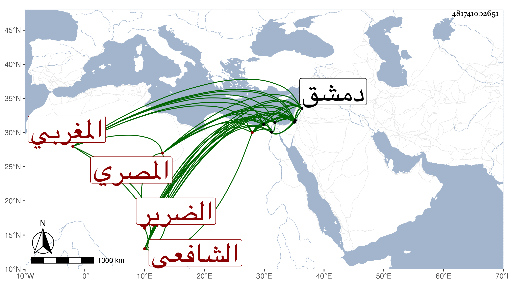

0902Sakhawi.DawLamic.ITO20230111-ara1.EIS1600.481741002651
Biography ID: 481741002651
587
حسين بن محمد بن أحمد بن محمد بن عبد الله بن إسماعيل البدر المغربي الأصل السكندري ثم المصري الشافعي الضرير ويعرف بابن النحال بنون ثم مهملة مشددة ويلقب بالكلابي وليس هو من بني كلاب ، ولد في صفر سنة إحدى وخمسين وسبعمائة بالقاهرة وقرأ بها القرآن ثم تلا الفاتحة على شيخ القراء المجد الكفتي ، وكان والده من أولي الفضل فاعتنى به وحفظه الوجيز للغزالي والالمام لابن دقيق العيد وألفية ابن مالك ، واشتغل بالفقه على البدر الطنبذي والبرهان البيجوري والعلاء الاقفهسي وغيرهم ، بل سمع دروس السراج البلقيني وبالفرائض على الشمس الغراقي وطنت على أذنه دروس النحو عند الشمس الغماري والاسيوطي والبرهان الدجوي وقرع سمعه كلام الشيخ قنبر والمجنون العجمي في المنطق ، وكتب من أمالي الزين العراقي عنه وسمع صحيح البخاري على النجم بن رزين وختمه علي ابن أبي المجد والتنوخي والعراقي والهيثمي وصحيح مسلم على الصلاح محمد بن محمد البلبيسي ، وسافر إلى دمشق وزار القدس والخليل ودخل ثغرى دمياط واسكندرية ، وكتب الكثير بخط حسن فحصلت له غشاوة ورمد فكحله شخص فكان سبب عماه وذلك في حدود سنة خمس وثلاثين فانقطع في خلوته بالمدرسة السيفية ، وحدث أخذ عنه الفضلاء وكتب عنه بعضهم من نظمه مواليا :
| بالله اعذروني في المصري وعشقي فيه | على جناه وما أحلى الجنى من فيه |
| غزال أهيف حريري مطربي أفديه | من ظبي أصل الكلابي فانثني في التيه |
مات في جمادى الأولى سنة سبع وأربعين بالبيمارستان وصلى عليه شيخنا بجامع الأزهر .
